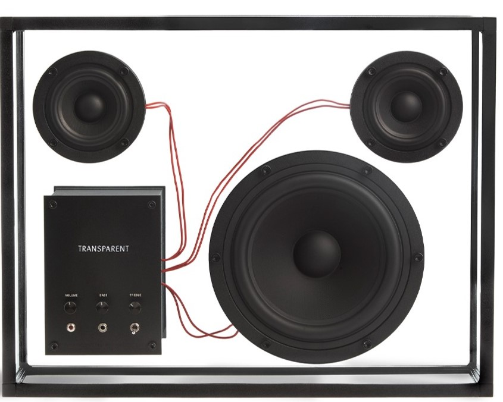
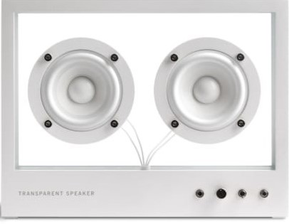
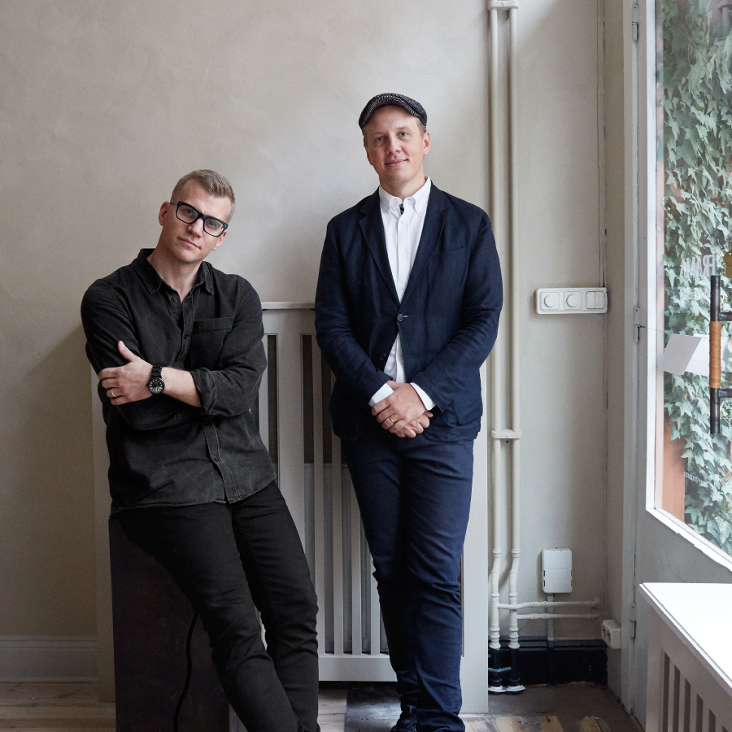

#01 SPEAKER TRANSPARENT #01 SPEAKER
TRANSPARENT #01 SPEAKER TRANSPARENT
#01 SPEAKER TRANSPARENT #01 SPEAKER
TRANSPARENT #01 SPEAKER TRANSPARENT
#01 SPEAKER TRANSPARENT #01 SPEAKER
TRANSPARENT #01 SPEAKER TRANSPARENT
#01 SPEAKER TRANSPARENT #01 SPEAKER

TRANSPARENT SPEAKER
¥000,000

SMALL TRANSPARENT
SPEAKER
¥00,000
TRANSPAREN SOUND / トランスペアレント サウンドは、最新のデジタル技術を用いて、
シンプルで機能的かつ持続可能なオーディオ製品を製作する
スウェーデンのオーディオブランドです。
様々な家電や製品は、わずか1年で古くなったと感じてはならないと私たちは信じています。
トランスペアレント サウンドの創設者であるPer BrickstadとMartin Willersは、
優れたサウンドテクノロジーと同じくらいインテリアデザインの一部としての製品を
製作するという情熱と好奇心に駆られています。
受賞歴のある最初の製品「TRANSPARENT SPEAKER」は最も有名ですが、今後、数々の傑出したオーディオ製品を
永久コレクションに追加していきます。
トランスペアレントサウンドは、Will.I.Am、Steve Angello、Robynや世界最大のYouTubeスターPewDiePieなど、
多くのジャンルのさまざまなアーティストを魅了しています。
2020年に展開されるよりエキサイティングなプロジェクトにご期待ください。

TRANSPARENT SPEAKERは、環境汚染につながる無駄な消費を クローズドループシステムに変えて行くという重大な目標を持っています。
時代を超越したデザインと高品質さにより、 TRANSPARENT SPEAKERはトレンドを超越し長期間愛され続けるでしょう。
しかし、実はこれらの製品には見た目以上のものが隠されているのです。 その構造は完全にモジュール化され、すべての部品を個別に交換、
アップグレード、修理、またはリサイクルすることができます。 技術が急速に変化する現代では、これらはスピーカーの未来を証明する方法です。
たとえば、ワイヤレス規格が新しく更新されたた場合、 顧客はこの小さなワイヤレスチップ部分のみをアップグレードできるので、製品を廃棄し買い換える必要はありません
私たちは使い捨ての消費者文化を根絶したいと真剣に思っています。 最終的には、製品は時間の経過とともに改善されながら、永久に存続するべきものと考えています。